contexte : comissariat partiel de l'exposition "Le logement pièce par pièce"
institution : maison de l'architecture d'Ile de France
date : septembre 2026
scénographie : Matters.xyz
type : enseignement et recherche
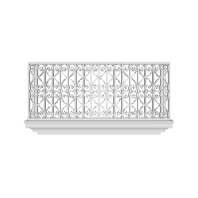
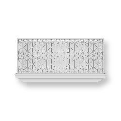
Indissociable de l’architecture haussmannienne, le balcon se dispose toujours en lien avec les pièces de réception dans les plans types de l’époque.
Qu’il s’agisse de loggia ou de terrasse, le séjour est systématiquement la pièce articulant le lien entre le logement et son prolongement extérieur.
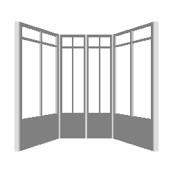
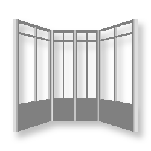
L’assouplissement du règlement haussmannien dans les années 1880 voit apparaître une nouveauté architecturale importée des pays anglo-saxons : la fenêtre arquée, dite bow-window.
Réservée aux salons, elle augmente l’apport de lumière naturelle et crée une alcôve supplémentaire participant à la redivision de ces espaces de réception.
Souvent associée à une banquette, la parlor-window est un espace associé à la lecture ou aux petits ouvrages de couture.
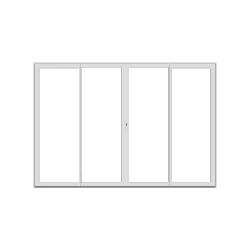
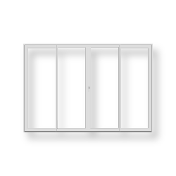
Le développement des techniques verrières en Angleterre, lors de la seconde moitié du XIXe siècle, permet la création de grands verres qui n’ont pas à être redivisés ou renforcés par des petits-bois.
Ces picture-windows sont installées dans les living-rooms non seulement pour offrir un maximum de luminosité et un cadrage sur le paysage, mais aussi car elles sont encore perçues comme peu intimistes et poussant au voyeurisme.
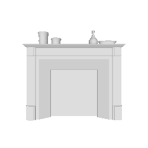
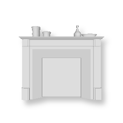
Unique source de chaleur dans le logement bourgeois, la présence d’une cheminée dans chaque salon est signe de grande richesse.
Les familles bourgeoises les plus modestes ne l’allumaient que le jour de réception, la journée de la semaine où la maîtresse de maison attendait dans son salon la venue potentielle de visiteurs.
Le goût européen pour les plantes d’intérieur se développe simultanément avec l’Empire britannique qui rapatrie régulièrement des espèces exotiques dans des intérieurs désormais correctement chauffés.
Tout comme le reste du mobilier, les plantes vertes suivent différentes vagues de mode, les succulentes remplaçant les fougères, qui avaient elles-mêmes chassées les aspidistras.
Le déplacement de la production de chauffage hors des pièces de vie éloigne alors le contrôle sur la température.
Le thermostat, tel qu’il est inventé à la fin du XIXe siècle, ne redonne pas seulement la possibilité de régler la température du foyer de manière centrale, il permet surtout de le faire passivement, sans interaction avec l’habitant.
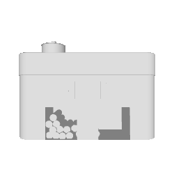
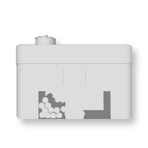
Pour l’immense majorité des foyers, la plus grande salle du logement est la salle à manger ou salle commune. Rarement séparée de la cuisine, elle profite de la chaleur des installations et permet à l’ensemble du ménage de se retrouver, de la préparation à la consommation du repas.
À la fois cuisinière, radiateur et bouillotte, le fourneau enferme le feu permettant, au contraire de la cheminée, de l’installer dans les logis monopièces.
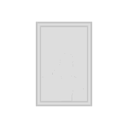
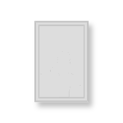
Délaissant la fresque antique ou la tapisserie médiévale, le salon bourgeois privilégie le tableau que l’on peut aisément déplacer selon que l’on déménage ou que l’on change son mobilier.
La mobilité du tableau, qui est aussi plus facilement vendable lors des salons, entraîne l’apparition des collectionneurs, qui les exposent alors fièrement dans des cabinets.
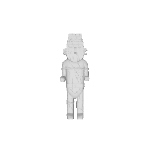
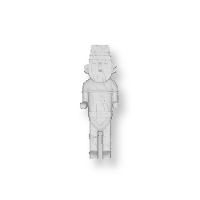
Rapportant un certain exotisme dans les intérieurs bourgeois, le bibelot vient de l’ailleurs ou du passé, de l’Orient ou de la Renaissance.
Les intérieurs bourgeois du XIXe siècles deviennent le lieu des collections dont la gratuité du geste s’associe avec l’application de la collecte.
Par sa totale inutilité, le bibelot est resté, de nos jours, l’objet de pure définition du goût de l’occupant des lieux.
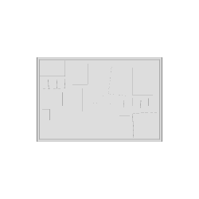
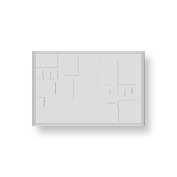
La démocratisation de la photographie, au tournant du XXe siècle, la fait entrer dans les foyers, et spécifiquement dans les salles communes.
Dans les années 1880 deviennent aussi populaires les photos de la famille réunie devant la maison, souvent avec ses plus belles possessions sorties et exposées devant l’objectif. C’est la maison elle-même et ses objets que l’on peut alors admirer aux murs du salon.
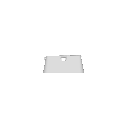
Si l’ensemble de la société du XIX° siècle pratique la fume, le type de tabac consommé en dit long sur le rang du fumeur. Alors que les classes inférieures s’allument des brûle-gueules, la bourgeoisie tire sur la pipe et protège ses doigts.
Architecturalement aussi, la mise à distance est un luxe réservé aux familles riches qui cantonnent le tabac au fumoir, un petit salon que l’on drape de velours pour y emprisonner les odeurs.
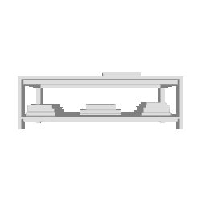
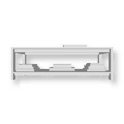
La tradition des livres conçus pour être laissés en évidence et non nécessairement lus remonte peut être aux origines de l’édition.
Montaigne se plaignait déjà au XVI° siècle que ses Essais « servent les dames de meuble commun seulement et de meuble de salle ».
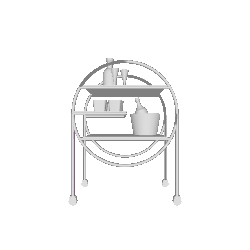
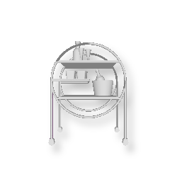
Développée au XVIIIe siècle, la desserte permet de se passer des domestiques lors du service, pour des raisons financières ou pour écarter les indiscrets.
Sa montée en popularité traduit aussi le passage du service à la française, où tous les plats sont présents sur la grande table ou sur un buffet et partagés ensuite, au service à la russe, qui amène à table des assiettes déjà remplies de portions individuelles.
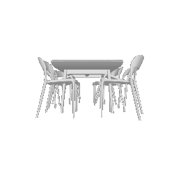
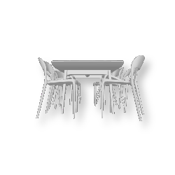
Avoir un meuble fixe réservé aux repas est une rareté jusqu’au XVIIIe siècle, y compris dans les classes supérieures. On a plutôt l’habitude de monter un plateau sur des tréteaux à l’heure du dîner, d’où l’expression dresser la table.
Lors de grandes fêtes dans les habitats ruraux, il est même courant de dégonder la porte de la grange pour cela, augmentant ainsi la capacité d’accueil tout en envoyant un signal fort d’hospitalité.
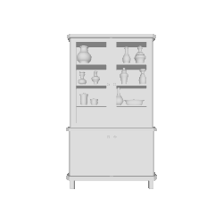
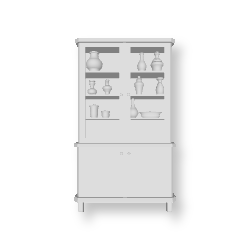
Qu’il s’agisse d’argentiers, de vaisseliers ou de bibliothèques, le XVIIIe siècle voit apparaître les meubles-vitrines qui mettent en avant, au lieu de cacher, ce qu’ils renferment.
Derrière une façade vitrée ou grillagée, les objets sont présentés aux visiteurs, parfois même montés sur de petits présentoirs et par la suite éclairés spécifiquement.
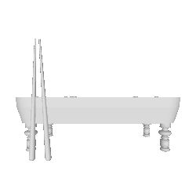
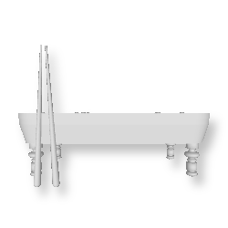
Vers la fin du XVIII° les hommes de la bourgeoisie française se prennent de passion pour le billard anglais. Il est particulièrement bien vu d'en posséder un ; les familles les plus aisées y consacrent même une pièce entière, appellée logiquement salon du billard.
Il parait alors tout à fait naturel, pour les philanthropes à l’origine des premiers HBM, d’intégrer des billards collectifs parmi les services disponibles au rez-de-chaussée, au même titre que les laveries ou les crèches.
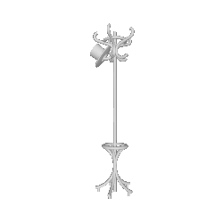
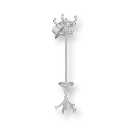
Le mot portemanteau fait son entrée au dictionnaire de l’Académie Française en 1798 presque simultanément avec la naissance de Michael Thonet qui sera le premier à décrocher du mur la patère pour en faire un véritable meuble autostable en bois courbé.
Aussi surnommé perroquet le portemanteau trouve autant sa place dans les salons mondains que dans les bistrots, dont Thonet dessinera d’ailleurs la chaise n°14, encore emblématique des terrasses parisiennes.
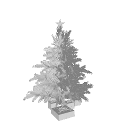
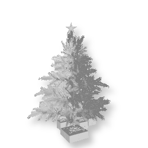
Puisqu’il est le lieu de la réception, le séjour est la pièce de la fête et donc du passage du temps calendaire. Sapin de Noël, menorah, guirlandes de l’Aïd... le séjour se pare de divers décors au fil de l’année et révèle ainsi le temps qui passe.
A l’exception peut-être de la chambre qui troque les couettes pour les draps aux beaux jours, le salon est la seule pièce du logement qui change au cours de l’année.
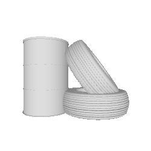
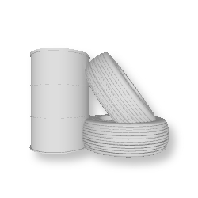
Le lieu de la sociabilisation et de l’auto-définition peut aussi être le lieu de travail où l’on passe après tout la majeur partie de notre vie à condition d’y retrouver son agentivité.
Des occupations d’usines opéraïstes, aux grèves de mai 68, les témoignages d’ouvriers et d’ouvrières ne manquent pas pour révéler le potentiel social de l’usine quand elle est gouvernée par les travailleurs. Preuve supplémentaire que le salon se définit moins spatialement que socialement.
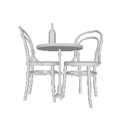
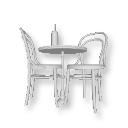
L’absence de salon dans les logements populaires des XVIIIe et XIXe siècle ne doit pas laisser croire que les classes laborieuses n’ont pas de vie sociale. Seulement, elle se passe en majorité à l’extérieur du logement.
Ainsi, lors des jours de repos on se donne rendez-vous au café, en famille comme entre amis. Les débits de boisson et les restaurants sont les véritables salons ouvriers où l’on rencontre du monde, on écoute de la musique et on dine.
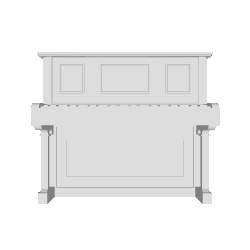
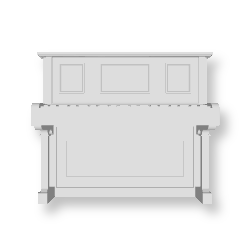
C’est uniquement au XIXe siècle que le piano fait réellement son entrée dans le logement des familles bourgeoises où il joue un rôle important dans l’éducation des enfants.
L’invention du piano droit dans la second moitié du siècle facilite son installation dans le séjour là où le piano à queue nécessitait presque une pièce à soi.
Ainsi, les annonces pour hôtels garnis précisaient souvent la présence d’un piano comme argument de vente.
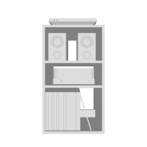
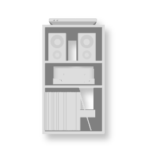
C’est au tournant du XXe siècle que les foyers français s’équipent du premier appareil domestique de diffusion musicale : le gramophone à disques. Très vite il est associés aux premières radios. Les postes TSF et les premiers tourne-disques sont alors volumineux et souvent intégrés dans un véritable meuble en bois qui fait aussi office de décoration.
Le développement des chaines hifi, alliant radiophonie, lecteurs vinyles puis cassette et CD participent à la sonorisation du séjour.
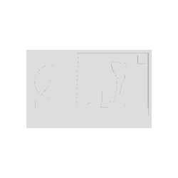
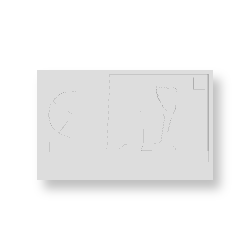
En 1960, 24 ans après la première diffusion d’une émission, seulement 13% des foyers français sont équipés d’un poste de télévision, ce ne sera qu’en 1967, simultanément à la télévision en couleur que l’on atteindra les 60%. La télé devient alors l’élément central du séjour, autour duquel on dispose les fauteuils et le canapé.
Dans les années 70 on contrôle désormais le flux d’image depuis ce dernier avec l’invention de la télécommande et la pratique du zapping l’accompagnant.
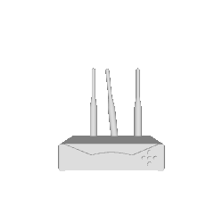
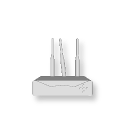
Le téléphone personnel à domicile ne se diffuse réellement qu’après la seconde guerre mondiale aux Etats-Unis et seulement dans les années 1970 en France avec le Plan de rattrapage téléphonique.
Au début installé dans l’entrée ou la cuisine, l’apparition du téléphone sans fil le fait finalement prendre sa place dans le salon où se concentre la majorité de l’électronique.
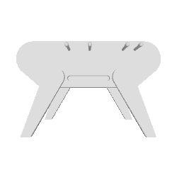
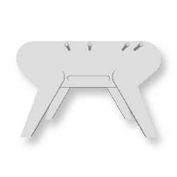
Dans le même objectif de propagation des bonnes mœurs qui amène les bourgeois philanthropes à créer les offices HBM, les maisons des jeunes et autres maisons de quartier fleurissent au début du XXe siècle.
Ces espaces sont un peu le pendant populaire des clubs, espaces de sociabilisation auxquels n’ont accès que les classes supérieures. Dans les deux cas, on retrouve une transposition du mobilier du salon, créant ainsi des espaces domestiques mais publics.
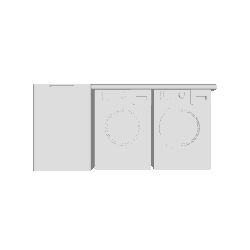
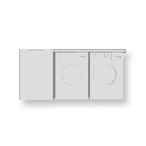
Quand les promoteurs philantropes se saisissent de la question du logement digne au début du XIXe siècle, ils mutualisent les espaces de service et de réception au rez-de-chaussée des nouvelles Habitation à Bon Marché.
Les logements privés sont réduits à des chambres et de véritables salons, salles de billards et fumoirs collectifs sont construits en pied d’immeuble aux côtés de laveries et parfois même de garderies.
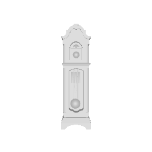
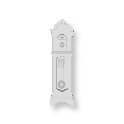
Si le suivi du temps à domicile est possible depuis le XVIe siècle grâce aux comtoises, c’est réellement le développement des pendules de cheminée, ou pendules de Paris qui fera entrer l’horloge dans le logement.
Miniaturisées et produites en série grâce aux avancées dans les fonderies et horlogeries, ces pendules préfigurent les premiers objets techniques que l’on expose fièrement sur la cheminée, autant pour leur utilité que pour leur attrait décoratif et novateur.
Bergère, cabriolet, marquise... le fauteuil a connu bien des variantes sous l’Ancien Régime. Si, à son apparition à la cour au XVIe siècle, le type de siège renseigne sur le rang du séant via une hiérarchie allant du fauteuil au tabouret, le fauteuil dans le logement dévoile la capacité de l’hôte à suivre les modes qui se succèdent.
Il n’est donc pas surprenant que le fauteuil fut régulièrement ressaisi par les designers modernes des Eames à Mies en passant par le Bauhaus.
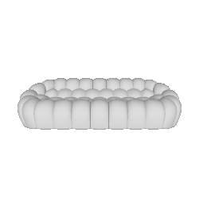
Bien qu’on puisse lui trouver un air de famille avec le klinai, ou divan antique, le canapé des salons européens est avant tout une version plus confortable du traditionnel banc en bois.
Comme le fauteuil, il a connu mille variations sous le ciseau des ébenistes, mais c’est bien sûr l’apparition de la TV qui en fit la pièce maîtresse de l’aménagement des séjours.
Grande pièce, aux usages multiples et non-déterminés, le salon devient le showroom de statement pieces, une nouvelle pratique du design moderne qui fait le pont entre expérimentation artistique et production sérielle.
Ainsi, le Pratone de Strum, le Mae West Lips de Dali ou les pierres coulées dans la dalle de la Fallingwater de Wright sont autant d’étapes supplémentaires dans la réinterrogation du sofa.
Clic-clac, BZ, convertible, sous toutes ses formes le canapé-lit prolonge le rôle de la banquette qui offrait un couchage d’appoint dans la salle collective.
Que ce soit car la famille est nombreuse, ou car le logement est petit, le séjour accueille les corps surnuméraires qui n’ont pas de chambre attitrée.
Salle de vie et de réception, parfois boudoir parfois antichambre, le salon est particulièrement adapté au système haussmannien de l’enfilade en façade.
Le dessin unique des baies donnant sur la rue invite les familles les plus aisées à spécifier les diverses pièces qui se succèdent dans une unique perspective linéaire. On passe du petit au grand salon, ou du salon égyptien au salon chinois selon le thème du papier-peint.
Dès son apparition, le salon est aussi une pièce que l’on traverse.
Le paravent apparait dans les grands salons du XVIIIe siècle pour rediviser l’espace social et permettre les discussions discrètes. Il sert aussi de mitigeur thermique, en coupant les courants d’air, ou en protégeant les convives et leurs manteaux du feu de la cheminée.
Redécouvert par les modernistes, le paravent devient dans le living-room une alternative à la cloison rigide. Régulièrement associé au tapis, il permet de recréer des sous-espaces dans le plan libre du séjour.
La mécanisation de la fabrication du tapis au XIXe siècle lui permet de remplacer la natte et la toile de jutte qui couvraient alors les sols tandis que simultanément, le développement du chauffage permet de remplacer les tapisseries murales par de simples papiers-peints.
Le tapis est alors intimement lié à l’Afrique et l’Orient pour la population européenne qui assiste régulièrement à de grandes expositions coloniales qui diffusent un goût certain pour l’exotisme.
Passe-plat, rideau, bar américain ou cloison coulissante, la salle à manger ne peut être entièrement coupée de la cuisine, ou du salon.
L’ouverture en grand des portes appelle les invités à venir à table quand leur clôture met en scène la préparation du repas comme un rituel secret réservé aux hôtes.
Si aucun plan type n’a traversé l’histoire architecturale du salon, une constante semble être l’importance donnée à sa hauteur sous plafond. Du hall anglais aux appartements de Nemausus, en passant par la Cité Radieuse, le séjour est systématiquement la salle de la double hauteur dans le logement.
Le décloisonnement des escaliers suite à l’abandon de la construction en pierre fait du séjour en double hauteur la rotule du logement sur plusieurs niveaux.
On peut trouver dans les règlements de copropriété une clause d’habitation bourgeoise interdisant aux propriétaires d’exercer une activité commerciale au sein de leurs foyers.
Il n’est pas anecdotique que dans le cas d’une clause simple les professions dites libérales (médecin, avocat, architectes) ne soient pas concernés par cette interdiction. En effet, on trouve dans la plupart des logements bourgeois du XVIIIe siècle un office, sorte de petit salon d’où travaille le maître de maison.
Le télétravail est devenu une pratique courante pour 22% des salariés du privé qui le pratiquent au moins une fois par mois. Travailler depuis chez soi implique alors de réinventer son espace de vie. L’installation d’un véritable home office ou simplement de son ordinateur portable sur la table à manger devient aussi un signe de position sociale.
Ainsi si 2 cadres sur 3 pratiquent le remote, c’est seulement 1 employé sur 10 qui peut travailler de chez soi.
Le repassage à domicile est rendu possible au XIXe siècle par le développement du fer plat en fonte qui étaient chauffés directement sur le feu de la cuisinière.
On doit la planche à repasser pliable et fuselée à Sarah Boone, ancienne esclave et première femme noire à posséder un brevet pour cette invention.
L’électrification du fer et surtout l’apparition de la télévision déplace le repassage dans le séjour qui peut alors se faire rapidement et en famille.
Pour les classes laborieuses en premier lieu, le logement peut être un lieu de travail. Ainsi à Lyon, les canuts sont restés célèbres pour l’installation de leur métiers à tisser au sein même de leurs habitations.
Le logement s’organisait alors souvent en duplex, avec les chambres en mezzanine donnant sur l’espace de travail et sous elles la cuisine et les pièces d’eau.
On peut finalement s’interroger sur la nécessaire physicalité du séjour. Puisqu’il s’agit d’une pièce qui au fil de son histoire s’est retrouvée dans et hors du logement, qui a pris mille et une formes, qui sert autant à recevoir les autres qu’à affirmer sa propre identité, le salon n’a-t-il pas atteint sa forme ultime en se dématérialisant ?
Les forums et salons de discussion en ligne ou les réseaux sociaux sont peut-être les nouveaux lieux du collectif auxquels on accède pourtant depuis le confort de notre intérieur.